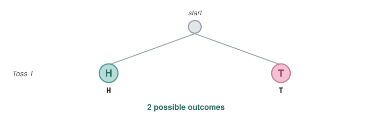
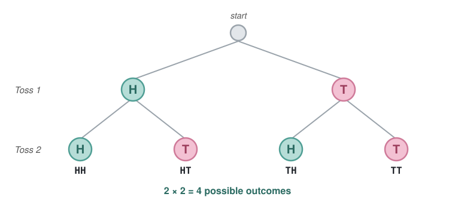
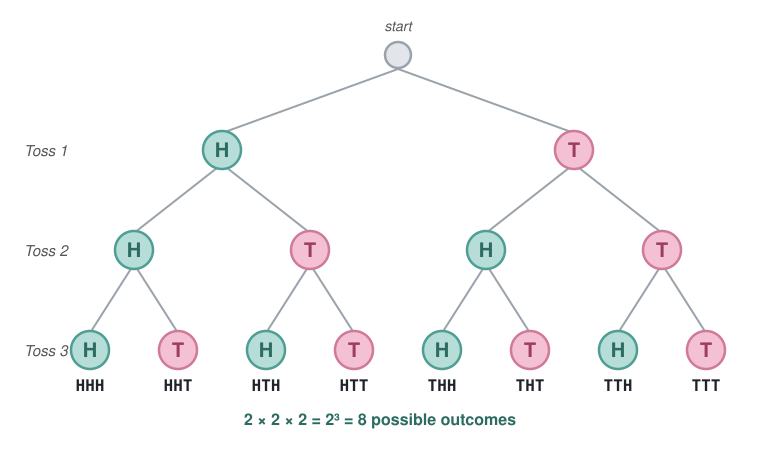
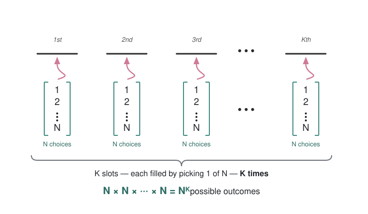
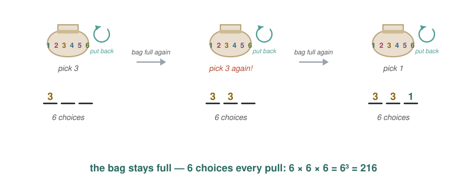
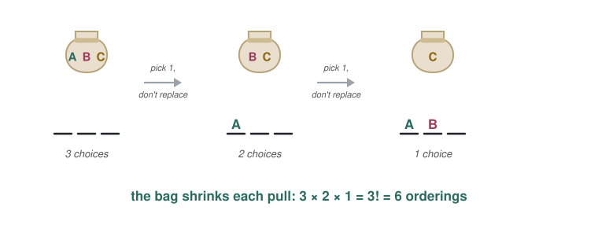
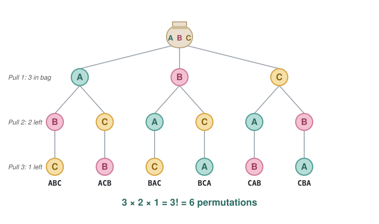
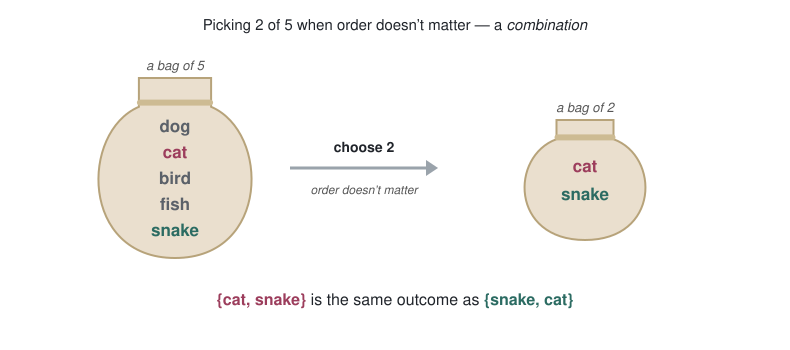
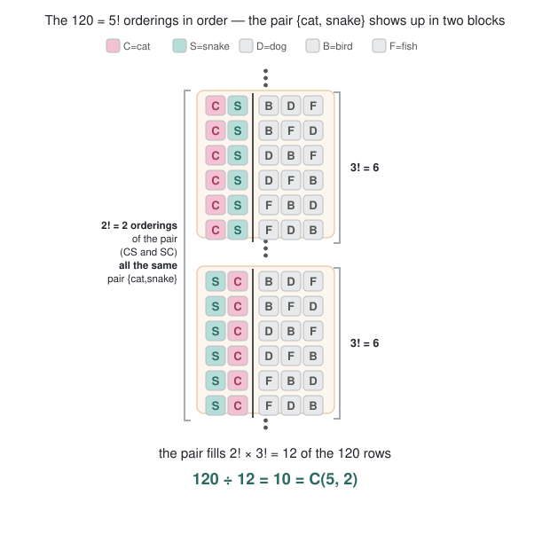
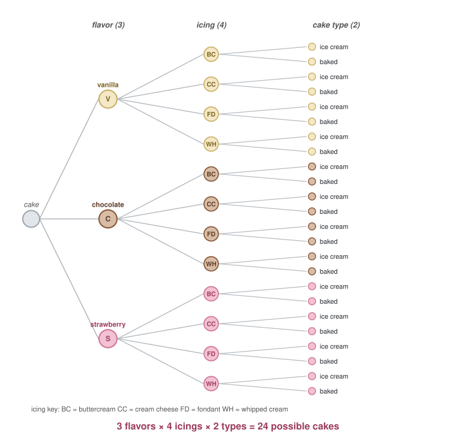

Probability Foundations II
Combinatorics and the Uniform Distribution
Different Probability Distributions
Yesterday we learned the axioms of probability, the “rules” that tell us how to compute probability. Let’s apply these rules in two different versions of the same situation.
Consider a fair coin as a coin which is heads 50% of the time and tails 50% of the time. Assume each coin toss is independent. What is the probability of getting two heads in a row?
The event two heads in a row, is the intersection of the event heads on toss 1 and heads on toss 2. The events are independent with probability 0.5 so we have \[\begin{align*} P(\{\text{two heads on a fair coin}\}) &= P(\{\text{heads on toss 1}\} \cap \{ \text{heads on toss 2}\})\\ &= P(\{\text{heads on toss 1}\}) P(\{\text{heads on toss 2}\})\\ &= (0.5)(0.5)\\ &= 0.25 \end{align*}\]
Now consider if I have “Curtis’ coin”, which I use to cheat at gambling so it returns heads \(70\%\) of the time and tails \(30\%\) of the time. In this case, the logic is the same until I plug in the numbers
\[\begin{align*} P(\{\text{two heads on a Curtis' coin}\}) &= P(\{\text{heads on toss 1}\} \cap \{ \text{heads on toss 2}\})\\ &= P(\{\text{heads on toss 1}\}) P(\{\text{heads on toss 2}\})\\ &= (0.7)(0.7)\\ &= 0.49 \approx 0.5 \end{align*}\]
Both of these computations follow the rules of probability we learned yesterday, they are both valid probability distributions.
- Probability Distribution
- Any function \(P\) that assigns probabilities to events that follows the axioms of probability.
Today we will look at a very special probability distribution and one we encounter often in the wild: the uniform distribution on a discrete state space.
Uniform Distribution: Equally Likely Outcomes
Recall an experiment has a state space \(\Omega\) of possible outcomes, for a coin it is \(\{H,T\}\) for a dice it is \(\{1,2,3,4,5,6\}\). If we assume all outcomes are equally likely, this is called the uniform distribution.
In a state space with \(N\) outcomes, the probability of any one outcome is then \(1/N\). For a fair coin, the probability of heads is \(1/2\). For a fair dice, the probability of any one number is \(1/6\).
For an event, which is a collection of outcomes, the probability of an event is the number of outcomes in the event divided by the total number of possible outcomes \[P(\text{Event}) = \frac{\text{Number of outcomes in an event}}{\text{Total number of possible outcomes}}\] Let’s look back at our coin outcome before. Using set theory rules, we computed the probability of 2 heads in a row is \(1/4\). Using this new rule, the total number of possible outcomes is \(HH, HT, TH, TT\). Only one of them has 2 heads in it, which agrees with our previous computation.
So that’s it: computing probabilities for the uniform distribution boils down to counting the number of ways an event could happen, and dividing by the total number of things that could happen. This is a field of mathematics called combinatorics, and we will have to count some pretty big numbers.
Recall I said last lecture the probability of getting dealt a pair in a game of poker is 42%, the actual number is
\[P(\text{dealt a pair in poker}) = \frac{1,098,240}{2,598,960} \approx 0.42\]
Wow, that’s a big number. Do I have to count to 1 million to compute that probability?
No, we don’t. Today we will learn some specific math functions that allow us to count very large numbers easily:
- the exponential, ex. \(2^3\), means 2 times 2 times 2
- the factorial, ex \(5!\), means multiply all the numbers up to 5, so 5 times 4 times 3 times 2 times 1
- a function called n choose k, written as \(\binom{5}{3}\) and said as “5 choose 3” which we will discuss shortly
We will learn which situations use these kinds of functions, and learn to recognize those situations in counting problems in the wild.
Note there are two numbers to figure out to compute this kind of probability:
- The bottom of the fraction, which is the total number of possible outcomes
- The top of the fraction, which is the total number of outcomes inside a particular event of interest
The bottom number is usually simpler and easier to compute so I would recommend in most problems starting there. The top number must always be less than the bottom number, so if you ever get a fraction more than 1 a mistake has been made and it’s best to start over and try again.
So let’s start with counting the bottom of the fraction and learning these new functions.
The Exponential Function
The function \(n^k\) means the number \(n\) times itself \(k\) times. So \(2^3\) means \(2 \times 2 \times 2 = 8\), \(3^7\) is 3 times itself 7 times which is 2,187.
This type of computation comes up a lot when we repeat the same experiment many times in a row and do not change the outcome space of the experiment.
When counting the total number of possible outcomes, a decision tree can be a useful tool. Let’s consider all the possible outcomes of tossing a coin 3 times.
Well there will be three coin tosses, each will be a head or a tail. So we have three blank spaces ___ ___ ____ that will each get a head or a tail.
Let’s consider what could happen in the first toss: I could get a head or a tail. Let’s write that as a tree that branches left or right to heads or tails.

Then, in the second toss, I could get a head or a tail again. Let’s branch on the branches, we now see 4 possible outcomes.

Finally, in the third toss we can again get heads or tails. Each of the previous 4 branches gets 2 more, so 8 branches total at the bottom of our tree showing all the possible outcomes.

This is an example of a decision tree, we break our problem down into individual pieces and consider all the outcomes of the parts, and combine them together to write down all the possible outcomes at the bottom of the tree. The total number of outcomes is \(2^3 = 2\times 2 \times 2 = 8\).
In general, when we have a list of \(\{1,\cdots, N\}\) possible outcomes, and we pick an outcome \(K\) times independently, there are \(N^K\) total possible outcomes.

For example, if I roll a dice 3 times there are \(6^3\) possible outcomes.
This is an example of sampling with replacement. Imagine a bag of \(6\) items, I reach into that bag and pick out an item at random and place that into the first slot, say I picked 3.

Now, 3 is “out of the bag” and not a valid choice for the next time. However, consider if I put the item back in the bag and pick a number again. Then, 3 is a valid choice and the number of possible outcomes for the second pick is the same as the first pick. I do this 3 times for \(n^3\) possible outcomes.
The Factorial Function
The notation \(n!\) (n exclamation mark) means multiply all the numbers up to \(n\), so
\[n! = (1)(2)(3)\cdots(n-2)(n-1)(n)\quad\quad \text{example,}\quad 5! = (1)(2)(3)(4)(5) = 120\]
This is helpful in computing what are called permutations and sampling without replacement.
Consider a list of letters “ABC”. How many ways can I re-order the letters and get a unique string (ex CBA, BAC, etc)
Let’s make a decision tree. There are three slots to fill, each slot will get a letter \(A\), \(B\), or \(C\). Let’s think of those letters as sitting in a bag and I pick a letter out of the bag one at a time. Once a letter is out of the bag, I do not put it back in so each letter can only be used once.

At the first pull, I can get A, B, or C so my decision tree has 3 branches. However, once I branch off say A again, I cannot pick A a second time. So now I only have 2 branches, not 3, off the first layer. Then, at the bottom layer once I have picked two outcomes, there is only one letter left in the bag so just one possible outcome.

We can see there are 3 times 2 times 1, \(3! = 6\) possible reorderings of this list. A re-ordering of a set of objects is called a permutation.
This is also an example of sampling without replacement. Imagine a bag of \(N\) items. I will reach into the bag \(k\) times and pull out an item and write down what I pull out. Each time I pull something out, I do not put it back so the set of options on the second pull is one less than the first pull. The total number of options in this case is \(N(N-1)(N-2)\cdots (N-K+1)\), which can also be written \[N(N-1)(N-2)\cdots (N-K+1) =\frac{(N)(N-1)\cdots(2)(1)}{(N-K)(N-K-1)\cdots(2)(1)} = \frac{N!}{(N-K)!}\]
The N Choose K Function
Notice in the last few cases, the order of the objects was an important factor. In a coin toss, I consider \(HTH\) a different outcome than \(HHT\) even though both have 2 heads and 1 tails, they are in different orders.
What if order did not matter to me? Imagine I have an amorphous blob of 5 items, maybe they are animal names like dog, cat, bird, fish, snake. How many ways can I pick 2 out of the 5 animals to make a new amorphous blob of 2 animals if order does not matter to me? Eg {cat, snake} is considered the same outcome as {snake, cat} in this situation. This is called a combination, when order is not relevant. In a permutation as discussed above, order was relevant.

The answer is a function called “5 choose 2”, written \(\binom{5}{2}\), and defined in terms of factorials,
\[\binom{5}{2} = \frac{5!}{2!(5-2)!} = 10\quad\quad \binom{n}{k} = \frac{n!}{k!(n-k)!}\]
I will not ask you to memorize this function, I will explain once where it comes from. Most important though is to recognize when a situation calls for an n choose k operation, (a combination) and then \(R\) or your calculator will have the built in function to find the number.
Consider first, all the possible permutations of the 5 animals, which we discussed is \(5!\) above. The ways the animals can be placed in 5 slots.
Then, draw a line dividing the first two slots from the back 3, call the first animals the “in” group. We see, each initial “in” group appears \(3!\) times for all the shuffling of the “out” group attached to it.
Furthermore, the “in” group {snake, cat} appears again as {cat, snake} in this order dependent version. Each unique group will appear 2! times for each shuffling of the in group.
So even though there are \(5!\) order dependent arrangements of the animals, each unique group appears in the first two slots \((2!)(3!)\) times, so to find the number of unique groups we have to divide \(5!\) by \((2!)(3!)\) which is exactly the 5 choose 2 operation.

Here are some example situations where the n choose k function counts the number of outcomes,
Example 1: In 5 coin tosses, how many ways are there to get 3 heads out of 5? Well, there are 5 locations, and we need to pick 3 of them to be heads, so the total number of outcomes is 5 choose 3, \(\binom{5}{3}\).
Example 2: I have 30 friends, I want to make a team of 11 people to play soccer. How many unique soccer teams can I make? Answer: here, order does not matter to the definition of the soccer team. No matter what order I list the players’ names in, it is the same soccer team.m. So this is an example of a combination, and the total number of teams is \(\binom{30}{11}\).
Practice Examples
Combinatorics can seem quite confusing, and it is really a way of thinking you develop over time. The only way to get good at these counting type problems is to do many practice problems. Then you will start to recognize problems you have solved before and learn from your mistakes. A few useful things to keep in mind when counting the number of outcomes in an event:
- Would a decision tree help here?
- Does this problem seem like sampling with replacement or without replacement? Is the set of possible outcomes changing with each step?
- Does order seem relevant to the outcome here?
Worked Examples
Feel free to try these problems yourself first, solutions are attached. We will also go over these in class, and have more problems like this in the worksheet.
1) Sum of two dice rolls
Say I roll 2 dice and add up the sum of the dice. So rolling a 2 and a 4 adds up to 6.
- What is the total number of outcomes?
- What is the probability of getting a 7?
- What is the probability of getting an 8?
- What is the probability of getting an 11?
Check your answer
a) Each die has 6 outcomes, and the two dice are independent, so there are \(6 \times 6 = 36\) equally likely ordered outcomes (treating “die 1 = 2, die 2 = 4” as different from “die 1 = 4, die 2 = 2”).
b) A sum of 7 happens for \((1,6),(2,5),(3,4),(4,3),(5,2),(6,1)\) — 6 outcomes. So \[P(\text{sum}=7) = \frac{6}{36} = \frac{1}{6} \approx 0.167.\]
c) A sum of 8 happens for \((2,6),(3,5),(4,4),(5,3),(6,2)\) — 5 outcomes. So \[P(\text{sum}=8) = \frac{5}{36} \approx 0.139.\]
d) A sum of 11 happens for \((5,6),(6,5)\) — 2 outcomes. So \[P(\text{sum}=11) = \frac{2}{36} = \frac{1}{18} \approx 0.056.\]
2) Baking a cake
Say I am baking a cake.
- The flavor can be vanilla, chocolate, or strawberry (3 options)
- The icing can be buttercream, cream cheese, fondant, or whipped cream (4 options)
- The cake type can be an ice cream cake or a baked cake (2 options)
I make a selection of each option, each equally likely.
- How many different cakes could I make?
- Draw a decision tree to show all possible outcomes.
- What is the probability the cake is chocolate and an ice cream cake?
- What is the probability the cake is strawberry or has buttercream icing?
Check your answer
a) Independent choices multiply: \(3 \times 4 \times 2 = 24\) possible cakes.
b) The tree branches 3 ways (flavor), then 4 ways off each (icing), then 2 ways off each (cake type), giving \(3 \times 4 \times 2 = 24\) leaves. (See the decision-tree figure.)

c) We can read off the 24 solutions at the bottom and count there are 4 which are both chocolate and ice cream. We can also see there is (1) choice for flavor, (1) choice for cake type, and (4) choices for icing since it is not specified. So in either case,
\[P(\text{chocolate and ice cream}) = 4/24 = 1/6\]
d) We can again count the number of total cake options at the bottom of the decision tree and see 12 of them satisfy these conditions. We can also break the (or) down into three mutually exclusive events:
- flavor is strawberry (1) and icing is NOT butter cream (3), any cake type (2) = 6 outcomes
- flavor is strawberry (1) and icing IS butter cream (1), any cake type (2) = 2 outcomes
- flavor is NOT strawberry (2), icing IS butter cream (1), any cake type (2) = 4 outcomes
So 12 outcomes in the event and 24 outcomes over all gives a 50% probability,
\[P(\text{strawberry or buttercream}) = 12/24 = 1/2\]
3) Balls in Urns
Say I have an urn with 4 red balls and 5 blue balls. I reach into the urn 3 times and pick a ball, and I do not replace the ball each time.
- What is the probability I draw 3 red balls in a row?
- What is the probability I get at least 1 blue ball?
- What is the probability I draw more blue balls than red balls?
Check your answer
There are 9 balls total, and we draw 3 without replacement.
a) This is an example of sampling without replacement. Consider the events red ball on draw 1, red ball on draw 2, red ball on draw 3. The event in question requires all three to happen. Each time I take a red ball out of the urn, the number of red balls left decreases. The probability shrinks with each draw as red balls leave the urn: \[P(\text{3 red}) = \frac{4}{9}\cdot\frac{3}{8}\cdot\frac{2}{7} = \frac{24}{504} = \frac{1}{21} \approx 0.048.\]
b) “At least 1 blue” is the complement of “no blue at all” — and “no blue” means “all red,” which we just found. So use the complement trick, \[P(\text{at least 1 blue}) = 1 - P(\text{3 red}) = 1 - \frac{1}{21} = \frac{20}{21} \approx 0.952.\]
c) With 3 draws, “more blue than red” means 2 or 3 of the draws are blue. Getting 3 blues has probability (like the 3 red example above)
\[P(BBB) = \frac{5}{9} \cdot\frac{4}{8} \cdot\frac{3}{7} = \frac{60}{504}\] The probability of getting 2 blues is RBB, BRB, or BBR which all have probability
\[P(RBB) = \frac{4}{9}\frac{5}{8}\frac{4}{7} = \frac{80}{504}\] \[P(BRB) = \frac{5}{9}\frac{4}{8}\frac{4}{7} = \frac{80}{504}\] \[P(BBR) = \frac{5}{9}\frac{4}{8}\frac{4}{7} = \frac{80}{504}\] These are all mutually exclusive events, so add up the probabilities and we have: \[P(\text{more blue than red}) = 3 \frac{80}{504}+\frac{60}{504}= \frac{300}{504} = \frac{25}{42}\]
4) Penguin picking clothes
Every morning for 10 days, a penguin reaches into its wardrobe and picks one of 3 bowties — red, blue, or green — at random, with each equally likely and each day independent of the others.
What is the probability the penguin wears the red bowtie on exactly 4 of the 10 days?
Check your answer
This problem needs both tools from this chapter at once. This is honestly kind of a difficult counting problem and I probably won’t ask one this difficult on a test, but wanted to show how these tools interact together.
First, the total number of equally likely 10-day outfit sequences is an exponential count: 3 choices each day, 10 days, so \(3^{10} = 59{,}049\) sequences.
Now count the favorable ones — exactly 4 red days. Two independent decisions:
- Which 4 of the 10 days are red? That is an \(n\)-choose-\(k\) count: \(\binom{10}{4} = 210\) ways.
- Fill the other 6 days with non-red bowties. Each of those days has 2 choices (blue or green), so \(2^{6} = 64\) ways.
Multiplying, the number of favorable sequences is \(\binom{10}{4}\cdot 2^{6} = 210 \cdot 64 = 13{,}440\), and \[P(\text{exactly 4 red}) = \frac{\binom{10}{4}\,2^{6}}{3^{10}} = \frac{13{,}440}{59{,}049} \approx 0.228.\]